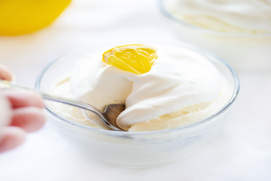

Lemon Mousse Dessert
This easy Lemon Mousse is the perfect Grand Finalle for a great dinner!

Recipe: lemon mousse dessert
Light, fluffy mouse infused with the sweet flavor of lemon... this sweet treat is delicious all on its own or topped with fresh berries.
Let's list now every ingredient you'r going to need and also an easy step-by-step instructions:
Ingredients
- Fresh lemon juice
- Lemon extract
- Unflavored gelatin
- Granulated sugar
- Heavy cream
Instructions
- Gather all of the equipment you will need, including one small mixing bowl, one large mixing bowl, a hand mixer, a spatula, and 4-6 individual serving dishes.
- Gather all of your ingredients, including both cold water and boiling water, before you start mixing.
- Chill the whipping cream, large mixing bowl, and beaters for 10 minutes.
- Begin by blooming your gelatin in cold water, then dissolving it in boiling water.
- Combine the sugar, lemon juice, lemon extract, and whipping cream in your cold mixing bowl and begin mixing at medium speed until stiff peaks form.
- Add your gelatin mixture and beat at medium-high speed until well-blended.
- Spoon or pipe mousse into individual serving dishes.
- Refrigerate, covered, about 1 hour or until ready to serve.

If you followed all the instructions corretly, it should now look as tasty as the above!
Also, check out my other 2 favourite recipes:
Home page